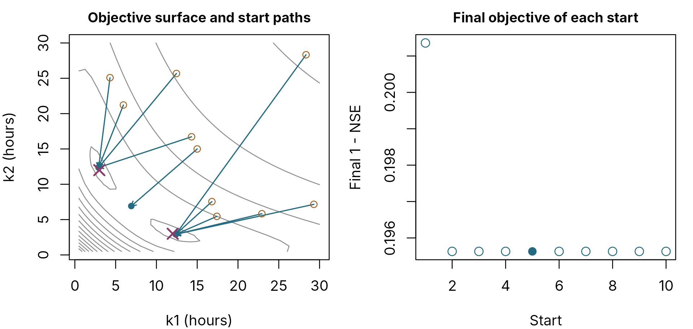

Calibration: multi-start, budgets and staged calibration
pdmS7 documentation
Source:vignettes/calibration.Rmd
calibration.Rmdcalibrate_pdm() finds parameter values that make the
simulated flow match observations. It uses L-BFGS-B, a fast local
optimiser that follows the slope of the objective downhill. Local
optimisers stop at the first minimum they reach, which need not be the
best one. This article shows how that happens, how multi-start
calibration guards against it, and how to budget a large
calibration.
A surface with more than one optimum
The two time constants of the surface cascade, k1 and
k2, make a clean example. A cascade of two linear stores
gives exactly the same outflow with the two constants swapped, so the
objective surface has two equally good optima, mirror images about the
diagonal.
set.seed(11)
n <- 24 * 90
forcing <- data.frame(
rain = ifelse(stats::runif(n) < 0.06, stats::rgamma(n, 0.7, scale = 4), 0),
pet = 0.08
)
truth <- pdm_presets("standard")
truth$area_km2 <- 50
truth$surface$k1 <- 3
truth$surface$k2 <- 12
truth$recharge$kg <- 400
truth_model <- pdm_from_config(truth)
start_state <- function(model) initial_state_from_flow(model, 1, 0.7)
observed <- run_pdm(truth_model, forcing, start_state(truth_model))$output$q_m3s *
exp(stats::rnorm(n, 0, 0.05))We calibrate both constants between 0.5 and 30 hours, starting from
k1 = k2 = 15, which lies on the diagonal, with nine further
random starts.
config <- truth
config$surface$k1 <- 15
config$surface$k2 <- 15
lower <- c(surface.k1 = 0.5, surface.k2 = 0.5)
upper <- c(surface.k1 = 30, surface.k2 = 30)
fit <- calibrate_pdm(config, forcing, observed, lower, upper, objective = "nse",
starts = 10L, seed = 2, control = list(maxit = 60))
fit$start_results
#> start objective convergence evaluations best surface.k1 surface.k2
#> <int> <num> <int> <int> <lgcl> <num> <num>
#> 1: 1 0.2013575 0 30 FALSE 6.918659 6.918659
#> 2: 2 0.1956302 0 60 FALSE 2.916063 12.375617
#> 3: 3 0.1956302 0 60 FALSE 12.376004 2.915833
#> 4: 4 0.1956302 0 120 FALSE 12.375608 2.916078
#> 5: 5 0.1956302 0 65 TRUE 2.915892 12.375838
#> 6: 6 0.1956302 0 80 FALSE 2.916095 12.375549
#> 7: 7 0.1956302 0 55 FALSE 12.375600 2.916080
#> 8: 8 0.1956302 0 70 FALSE 12.375542 2.916081
#> 9: 9 0.1956302 0 135 FALSE 2.915961 12.375772
#> 10: 10 0.1956302 0 115 FALSE 12.375738 2.916001
grid <- seq(0.5, 30, length.out = 40)
loss <- function(k1, k2) {
cfg <- config
cfg$surface$k1 <- k1
cfg$surface$k2 <- k2
model <- pdm_from_config(cfg)
# calibrate_pdm() starts every evaluation from initial_state(model, 0.5); so does this.
sim <- run_pdm(model, forcing, initial_state(model, 0.5))$output$q_m3s
sum((sim - observed)^2) / sum((observed - mean(observed))^2)
}
surface <- outer(grid, grid, Vectorize(loss))
set.seed(2)
unit <- rbind(c(14.5, 14.5) / 29.5, t(replicate(9, stats::runif(2))))
start_points <- 0.5 + unit * 29.5
tab <- fit$start_results
par(mfrow = c(1, 2), mar = c(4, 4, 2, 1), cex.main = 0.95)
contour(grid, grid, log10(surface), nlevels = 14, col = "grey55", drawlabels = FALSE,
xlab = "k1 (hours)", ylab = "k2 (hours)", main = "Objective surface and start paths")
arrows(start_points[, 1], start_points[, 2], tab$surface.k1, tab$surface.k2,
length = 0.06, col = pal[1], lwd = 1.3)
points(start_points, pch = 1, col = pal[2])
points(tab$surface.k1, tab$surface.k2, pch = 16, col = pal[1])
points(c(3, 12), c(12, 3), pch = 4, cex = 1.6, lwd = 2, col = pal[4])
plot(tab$start, tab$objective, pch = ifelse(tab$best, 16, 1), col = pal[1], cex = 1.3,
xlab = "Start", ylab = "Final 1 - NSE", main = "Final objective of each start")
Left: contours of 1 - NSE over the two time constants, with each start’s path from its starting point (open circle) to where it stopped (filled circle). Crosses mark the two true optima. Right: the final objective of each start; the filled point is the start returned.
Start 1, the configured point, slid along the diagonal and stopped at
a saddle where k1 = k2: on the diagonal the slope points
along it, not off it, so a local optimiser cannot see the better valleys
either side. The nine random starts all found one of the two true
optima. A single-start calibration from this configuration would have
stopped at the saddle with no warning.
Real objective surfaces are rarely this tidy, but the lesson holds: a
local optimiser reports the bottom of whichever valley it starts in.
start_results shows whether the starts agree.
Reading start_results
| Column | Meaning |
|---|---|
objective |
Final objective of the start. For NSE, this is 1 - NSE |
convergence |
0 normal; 1 iteration limit reached; 51 or 52 line search could make no further progress |
evaluations |
Model runs used, including the gradient calls optim
leaves out of its own count |
best |
The start returned |
| One column per parameter | Where the start ended |
- Starts agree on objective and parameters: a well-defined optimum; fewer starts would do.
- Starts agree on objective but not parameters, as here: equifinality. The data cannot separate the parameters; fix one or narrow the bounds.
- Starts disagree on objective: local optima. Keep enough starts to find the best one reliably.
How many starts, and what it costs
The cost of a calibration run is
basins x starts x evaluations per start x seconds per evaluation / coresEvaluations per start depend on the number of parameters, the bounds
and the basin. Measure them on a pilot before committing compute:
inst/examples/pilot_calibration.R calibrates a few basins
with many starts and reports the start at which each found its best
objective, the spread of objectives and a budget for the full run. Its
synthetic dry run needs no data:
Sys.setenv(PILOT_SYNTHETIC = "1")
source(system.file("examples", "pilot_calibration.R", package = "pdmS7"))With the compiled engine, one evaluation of 29 years at 15 minutes takes about a second on a 2.1 GHz Xeon. The performance guide gives measured figures.
Running basins in parallel
calibrate_pdm() runs its starts one after another.
Spread basins across cores instead; this works on Windows as well as
Linux:
cl <- parallel::makeCluster(parallel::detectCores() - 1L)
parallel::clusterEvalQ(cl, library(pdmS7))
fits <- parallel::parLapply(cl, seq_along(basins), function(i, basins, lower, upper) {
b <- basins[[i]]
calibrate_pdm(b$config, b$forcing, b$observed, lower, upper, warmup = b$warmup,
objective = "nse", starts = 10L, seed = 1000L + i)
}, basins = basins, lower = lower, upper = upper)
parallel::stopCluster(cl)Give each basin its own seed, as here, so that the starts differ between basins and every run can be repeated exactly.
Staged calibration
Moore (2007, p. 490) describes a cheaper approach for sub-daily models. The parameters that control the long-term water balance (soil capacity, evaporation, recharge, baseflow) are calibrated first at a daily step over the whole record. The parameters that control the fast response (the surface time constants, the time delay) are then calibrated at 15 minutes on selected storm events, with the slow parameters fixed.
Because the slow parameters see years of data at a daily step and the fast parameters see only storms at 15 minutes, the expensive 15-minute runs are short. The two stages can each use multi-start calibration. Parameters fitted at one step need checking at the other: time constants are in hours and carry over, but demand recharge in particular depends on the step.
# Stage 1: water balance, daily.
daily <- config
daily$dt <- 24
slow <- calibrate_pdm(daily, daily_forcing, daily_observed,
lower = c(fc = 0.7, distribution.cmax = 50, recharge.kg = 10,
groundwater.kb = 100),
upper = c(fc = 1.3, distribution.cmax = 400, recharge.kg = 5000,
groundwater.kb = 1e5),
warmup = 365, objective = "nse", starts = 10L, seed = 1)
# Stage 2: fast response, 15 minutes, storm events only, slow parameters fixed.
fast_config <- slow$config
fast_config$dt <- 0.25
fast <- calibrate_pdm(fast_config, storm_forcing, storm_observed,
lower = c(surface.k1 = 0.5, surface.k2 = 0.5),
upper = c(surface.k1 = 48, surface.k2 = 48),
warmup = 96, objective = "nse", starts = 10L, seed = 2)This mirrors multi-timescale machine learning models, which also separate slow and fast dynamics. In a benchmark against such models, staged calibration is the fair counterpart.
At a single time step, calibrate_staged() makes the same
split for you: the water balance and slow stores first, on log flows
with a volume penalty, then the fast stores, then a short joint polish.
Automatic
calibration, explained shows it at work, and
calibrate_batch(staged = TRUE) applies it to every basin in
a batch.